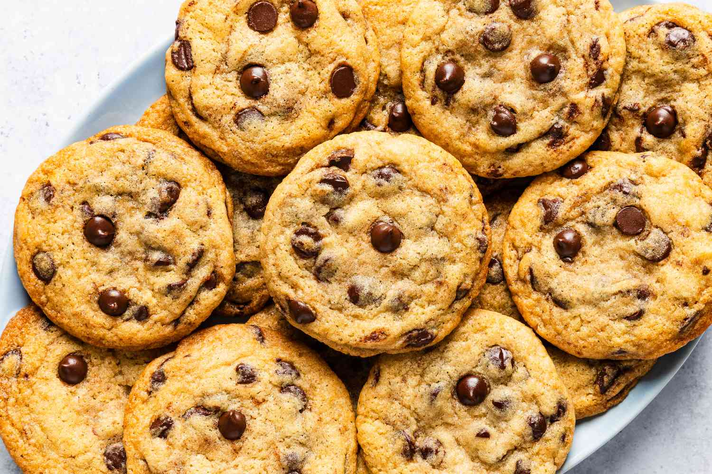
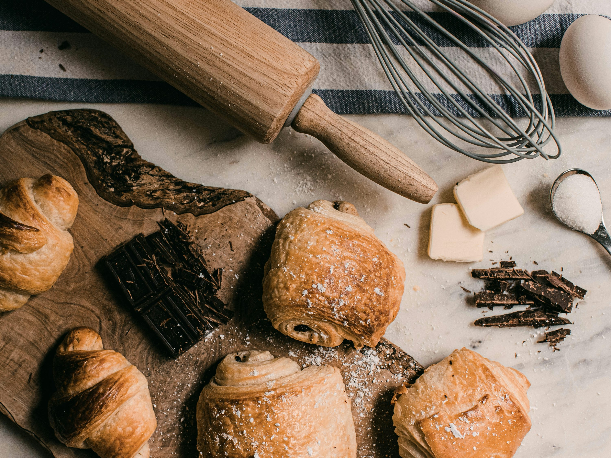

Warm, golden, and satisfying — bake your way to homemade goodness.

Crispy on the edges, chewy in the middle — the classic comfort treat.
Light, fluffy, and full of flavor — perfect for every celebration.
Sally's Bakery is a warm, welcoming guide designed to help new bakers discover the joy of creating homemade treats. From simple recipes to essential tips, this site makes learning to bake easy, fun, and rewarding.
Start Baking
Warm, golden, and satisfying — bake your way to homemade goodness.

Crispy on the edges, chewy in the middle — the classic comfort treat.
Light, fluffy, and full of flavor — perfect for every celebration.

Hi, I’m Sally Xie, the creator of Sally's Bakery! I started this website to share my love for baking and to help beginners discover how fun and comforting it can be to make something from scratch. As someone who learned to bake through trial and error, I know how rewarding it feels when a recipe finally turns out right — and I hope Sally's Bakery inspires you to keep whisking, mixing, and blooming with confidence in your own kitchen.
Contact Me